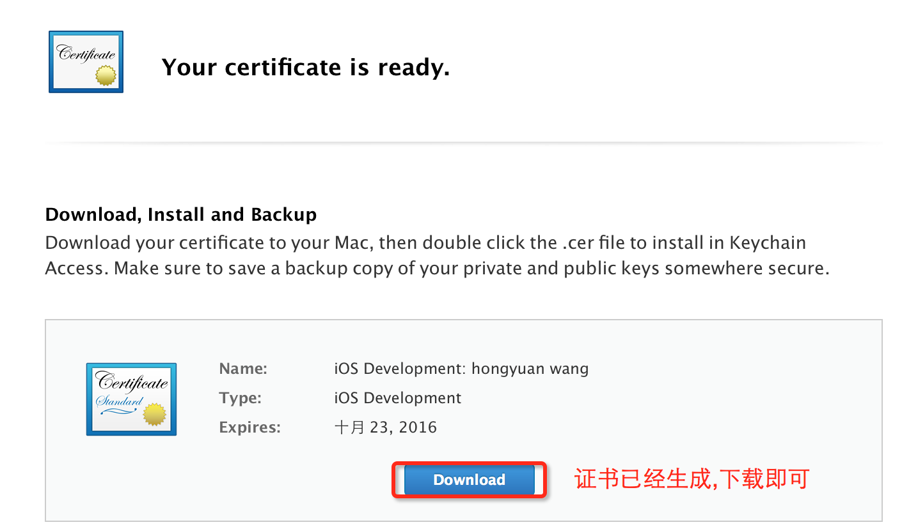

配置真机调试
一.证书相关的配置
1.进入会员中心
- 开发者主页
- 点击
Member Center
- 登录已经加入到开发者计划中的AppleID
- 如果该账号在多个组织中(企业账号管理中),则会让选择账号(默认没有该选项)
- 进入下一个页面
- 点击Certificates, Identifiers & Profiles,进入下一个页面
- 点击iOS位置处,任何一个选项,进入下一个页面
二.配置证书相关的内容
1.配置证书文件
- 作用:用于决定让哪台电脑可以真机调试
- 结果:会生成一个证书文件,需要将文件安装到钥匙串中
- 注意:
- 证书最多只能配置两个
- 如果想要多人真机调试,可以生成p12文件(后面详细讲解)
- 步骤:
- 选择证书位置的任意选项,点击右边
+号,进入下一个页面
- 在该页面选择要配置证书的类型
- 证书有多种类型
- 比如:真机调试证书/发布程序证书/远程推送证书等
- 当前选择真机调试证书,并且点击continue
- 该页面是提供生成证书时需要CSR文件(证书请求签名文件)
- 该文件需要在钥匙串中生成
- 生成步骤如下
- 打开钥匙串
- 选择:钥匙串访问-->证书助理-->从证书颁发机构请求证书
- 填写信息,生成CSR文件
- 上次CSR文件,用于生成证书,点击生成
- 上次CSR文件,用于生成证书
- 证书生成成功,点击下载证书

2.配置AppID
- 作用:用于决定让哪些App可以真机调试
- 结果:不会生成新的文件,之后会利用该AppID生成描述文件
- 类型:
- 明确的APPID:可以做特殊功能:比如内购/远程推送
- 模糊的APPID:方便测试,但是不能做特殊功能
- 步骤:
- 选择identifiers,以及右侧
+号
- 填写APPID的描述,用于自己区分
- 选择APPID的类型,如果仅仅是真机测试可以选择模糊的
- 确定生成对应的APPID
- 生成成功

3.配置Device
- 作用:用于决定让哪些真机可以用于真机调试
- 结果:不会生成新的文件,之后在生成描述文件时会需要选择设备
- 步骤:
- 选择Devices中的all,以及右侧的
+号
- 获取自己的设备UDID,填入该位置即可
- 设置的UDID获取步骤:
- 将真机插入电脑
- 打开Xcode,选择window-->Deivces
4.配置描述文件
- 作用:将刚才配置的三个内容联系起来
- 结果:会生成新的文件,需要下载安装(双击安装即可,会自动安装到Xcode中)
- 步骤:
- 选择描述文件,并且点击右边的加号
- 选择描述文件的类型,不同类型有不同的作用
- 选择刚才生成的APPID
- 选择刚才生成的证书文件
- 选择刚才添加进来的设备
- 给描述文件起名字

- 生成对应的描述文件,下载安装即可
5.总结:
- 最终生成两个文件
- 证书文件
- 描述文件

- 安装证书:在钥匙串可以查看
- 安装描述文件:在凑得中可以查看:偏好设置中,账号位置出(
可以自行查找)